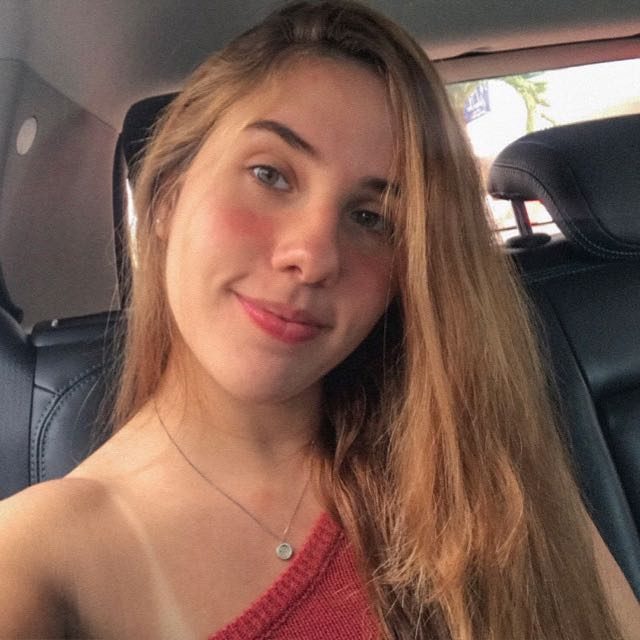

Rafaela Araujo de Azevedo Pitanga
Meu nome é Rafaela, tenho 20 anos e sou estudante de Ciência da Computação na UFPE, atualmente no primeiro período.

Algumas curiosidades sobre mim:
- Sou voluntária da BiT (Brazilians in Tech), uma página de mulheres na tecnologia;
- Eu demorei 2 anos para decidir o que queria cursar na faculdade, até então só sabia que era de exatas (hoje nem sei mais);
- Comecei a jogar The Sims com 3 anos de idade e jogo até hoje (amo muito de verdade k);
- Toco um pouco de violão e ukulele, mas só uma desenrolada mesmo;
- Sou virginiana com ascendente em libra e lua em leão;
- Meu primeiro contato com programação foi na faculdade, antes disso eu não conhecia nada desse mundo;
- Tenho duas irmãs que todo mundo confunde muito e muita gente pergunta se somos (tri)gêmeas - mesmo a diferença de idade sendo grande - segue fotinha:
Mais sobre a BiT (e eu)
Antes de passar no vestibular, eu já acompanhava muito a Brazilians in Tech e a página me ajudou muito na decisão do curso. Então, em julho de 2021, eu me inscrevi para ser voluntária e continuo até hoje, ocupando vaga na curadoria de tendências. Nessa ocupação, eu basicamente preciso estar por dentro de oportunidades recentes na área tech, eventos, bolsas de estudo, etc. e sempre dando ênfase a coisas destinadas às mulheres (principalmente). Daí, eu faço a divulgação dessas oportunidades no próprio site e, de segunda a sexta, no twitter da BiT.